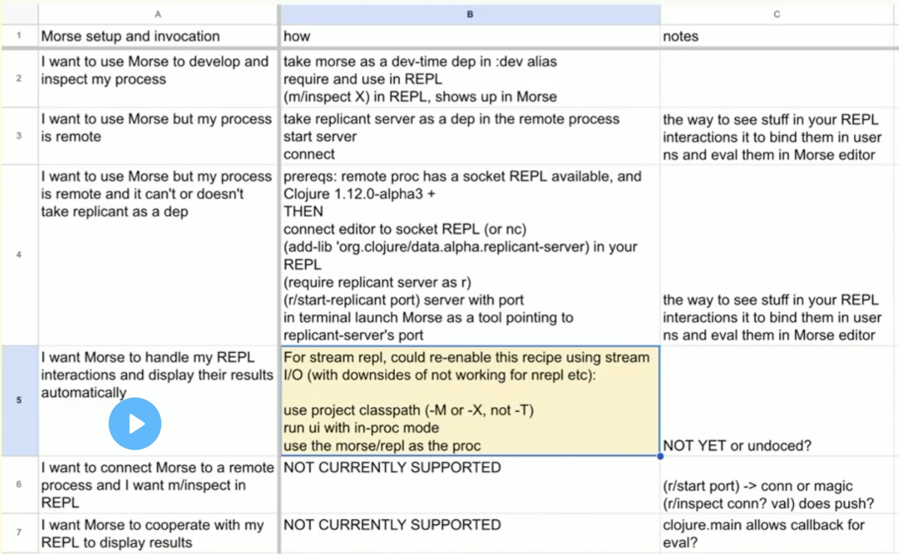
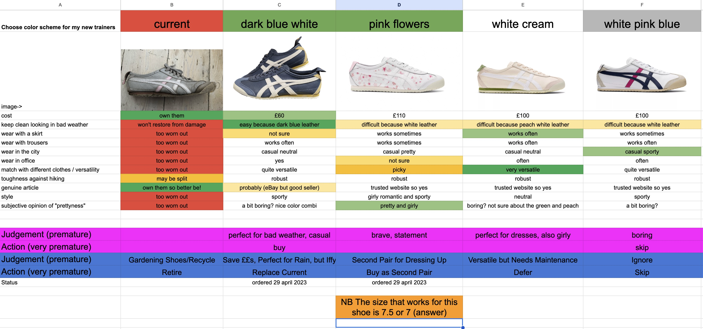
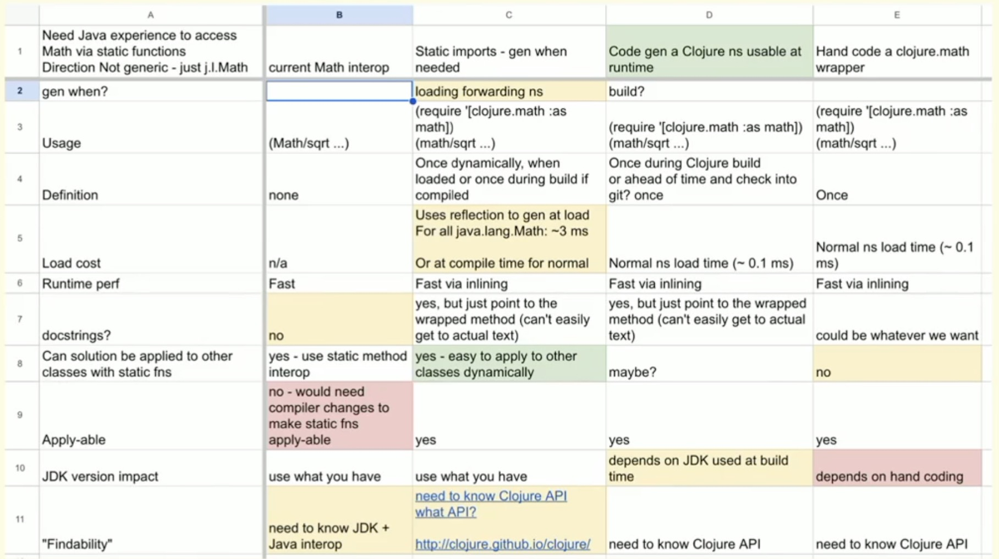
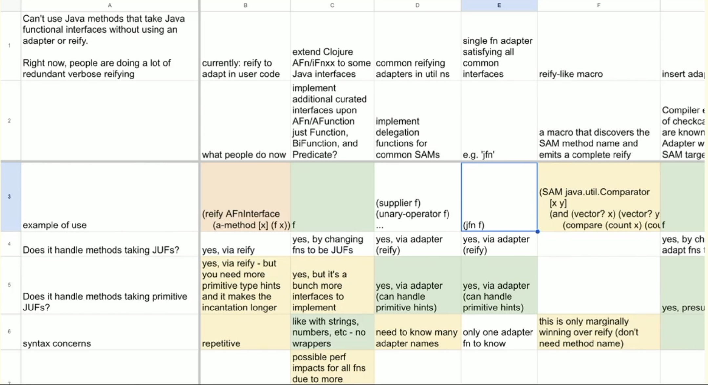

Foreword
This booklet is based on a talk given by Rich Hickey at Clojure Conj on April 28th 2023.
Principles:
- Principle: Design
- Principle: Words
- Principle: Questions
- Principle: Status & Agenda
Design: Phases
- Phase: Describe (situation)
- Phase: Diagnose (possible problems)
- Phase: Delimit (the problem you are going to solve)
- Phase: Direction (strategy, approach)
- Phase: Design (tactics, implementation plan)
- Phase: Dev (build it)
Design: Techniques
- Technique: Glossary
- Technique: The Socratic Method
- Technique: Reflective Inquiry
- Technique: PM Top Story/Ticket
- Technique: Description
- Technique: Scientific Method
- Technique: Problem Statement
- Technique: Use Cases
- Technique: Decision Matrix (DM)
Columns→Approaches
Rows→Criteria
Cells→Aspects
Tips, Outputs, Benefits - Technique: Diagrams
Objective: Demystify Design
Not (just) going to the hammock
practice - what you do
concrete techniques with tangible outputs
demonstrable progress - walk forward
activities you can make PM stories out of
- thus make time for, throughout the dev process
- not pleading for 2 weeks of nebulous "hammock time" up front
valuable artifacts that make the effort evident
tips and techniques, not a formal method or anything highfalutin'
Design
design Latin for waiting to code
coding happens throughout
performing experiments
answering interim questions
why you want a language that supports exploratory programming without being in a project building context
design mark out, a plan
the emphasis in this talk is about supporting your (team's) reasoning process, not just the end-product blueprint-like design
writing down your thoughts helps you form them
techniques can guide your thinking and decision-making
- reified/refined/shared concepts
- onboarding/resumption
- validation
- eventually, documentation
Words
Choose good words, all the time
not about bikeshedding or premature marketing
precision in naming == precision in thinking (precision: before+cut)
eschew nicknames, superheroes etc
- not semantic/meaningful
- give cover to fuzziness
- don't track evolving thinking
be succinct gird, gather up
- brief, clear and complete
- not just concise cut off, or merely hinted at
More Words
use the dictionary (not just for writing keynotes)
go right to the origins
- most useful/abstract semantics
- discover the composition within words
a good words later becoming wrong could mean:
- you've changed your mind without acknowledging it
- you are drifting from your intentions
your thinking will evolve and your words (story titles etc) should also
Technique: Glossary
terms are invaluable in tech
valuable shorthand
don't presume a shared understanding
- define, in one place
- use uniformly and consistently
helps non-tech folks trying to follow along
when terms break, fix or abandon
Example Glossary (a Google spreadsheet)
Questions
a most powerful thinking tool
to formulate a question is to reify what you seek
getting questions right is half the battle
questions provoke, often novel thinking
logic (just) helps us rule out some of it
Technique: The Socratic Method
interrogate ask together
examine an idea dispassionately
questioning its underlying assumptions, consistency
dispassionate without suffering
- you are not your idea
- you are a source of ideas, some better than others
we don't define/opine the truth, we discover it
The Socratic Method: A Practitioner's Handbook - Farnsworth - Amazon UK
Father Watson's Questions
- Where are you at?
- Where are you going?
- What do you know?
- What do you need to know?
Devs are good at the first two, but those miss why?
Technique: Reflective Inquiry
Not (just) going to the hammock
| Understanding | Activity | |
|---|---|---|
| Status to stand | What do you know? | Where are you at? |
| Agenda to be done | What do you need to know? | Where are you going? |
this is a framework that can be applied throughout the design process
note the importance of thinking about your thinking
reflect bend back
inquiry - advancing knowledge, is the driver
Technique: PM Top Story/Ticket
Several design techiques contribute to your 'top' story in PM
Looking to always create structured stories with sections for
- Title
- Description
- Problem Statement
- Approach
Design Stories contribute to building a 'top' story
Example: Story
Support Java Streams in Clojure's seq functions
Description
...
Problem
...
Approach
Design Progress
measured by increasing understanding
of the truth and the world
and your opportunities within it
decisions made and why
- not checking off some process/method or design artefact list
- or making a plan from your first idea
Design Phases
not everything with any linearity is a "waterfall"
nor do your want "iterative development"
iterate == Latin for do over
better: incremental grow into
more like a hike up the (understanding) mountain, not always up, but trending up
being able to name phase appearance helps with where are you at?
not monotonic - ok! stay open-minded
- this is when change is cheapest
be explicit about backtracking
Phases
these are words with a D this time
- Describe (situation)
- Diagnose (possible problems)
- Delimit (the problem you are going to solve)
- Direction (strategy, approach)
- Design (tactics, implementation plan)
- Dev (build it)
at any time:
- Decide (to do, or not)
Phase: Describe
the situation
bug/failure reports
feature requests, external and internal (backlog)
context
| What do you know? | What do you need to know? |
|---|---|
| something seems wrong, obstructive in the world | the extent of it |
| Where are you at? | Where are you going? |
|---|---|
| observing, listening |
|
Technique: Description
one paragraph summary
situation/context
symptoms/reports/observations
requests
don't:
- say what the problem is
- accept as fact assertions that imply what the problem is
- instead: "X says Y"
Phase: Diagnose
know across possible problem(s), of two kinds
- bugs/defects
- yes bugfixes need design (or revisions of a design)
- lest you just play symptom/code whack-a-mole
- features
| What do you know? | What do you need to know? | Where are you at? | Where are you going? |
|---|---|---|---|
| the symptom, context | the cause(s) | have good description, evidence |
|
Diagnose: Bugs
symptom → possible problems → (likely) problem
hypotheses (more than one)
pick one (how?)
- use logic first (to rule out)
- "most likely" (intuition)
- makes the problem space smallest (divide and conquer)
Use the Scientific Method
Technique: Scientific Method
out of scope for this talk
formulate a supporting/refutin conjecture
design an experiment
write results template first
- "if this sheet were filled in we'd know X"
code it, conduct it
apply conjecture logic, repeat
Diagnose: Feature Requests
feature factura: making, of an answer
not the problem
we don't have feature X is never a valid problem statement
recognise and kill all such statements
feature → problem(s) for which that feature is (one possible) answer
- what is the user's intention/objective? (not how)
- what is in the way?
Phase: Delimit
the problem you are going to solve
you might discover multiple problems or bigger problems during diagnosis
| What do you know? | What do you need to know? |
|---|---|
| what the problem is |
|
| Where are you at? | Where are you going? |
|---|---|
| have diagnosis | making the problem statement |
Technique: Scientific Method
Succinct statement of unmet user objectives and cause(s)
not symptoms/anecdotes/desires
not remedy/solution/feature - challenge is to filter out
modify your top story Title from symptom → problem
add Problem after the Description in the top story - link to diagnosis work
subject to refinement
- as your understanding increases
- don't let your problem statements get stale
This is the most important artifact you will have
if you don't relentlessly focus on a problem you may make something that doesn't solve any problem
Phase: Direction
strategy, approach
User's intentions and objectives
High-level approaches to addressing
e.g. in-proc/out, lib/app, buy/build, modify/add, automatic/manual etc
| What do you know? | What do you need to know? |
|---|---|
| what the problem is |
|
| Where are you at? | Where are you going? |
|---|---|
| Have description and problem statement |
|
Technique: Use Cases
user's intentions and objectives
in terms of what the user could accomplish
were the problem solved
not how (yet)
make a blank 'how' column for later
should not start with:
the user will push an orange oval button and music will play
later you will fill in the 'how' column with that kind of recipe for using the solution you've designed
Template: Use Cases

Technique: Decision Matrix (DM)
a (google or other live-editing) sheet
A:1 what decision are you trying to make, for which problem?
- Approaches - Columns (but first labels rows)
- Criteria - Rows (but first labels columns)
- Aspects - Cells
sheets > docs
prose docs create a linearization that makes contrast difficult
Example: Decision Matrix (DM)


DM Columns: Approaches
first row or two describe approach
- must give you shorthand for talking, yet make clear what about
- succinct description of approach, use row 2 if needed
- freeze the approach title/description rows
if you are modifying something, the first 'approach' should be the status quo
columns for what others have done in same situation
and your initial ideas
A DM is about creating a great approach, not merely shopping
the answer is often an approach you don't begin with
DM Rows: Criteria
means of judging deciding
First column - succinct descriptions of criteria (freeze this column)
Include criterion iff salient sticks out or relevant relates to the problem, sort by importance, distinction
will usually include rows for
- fitness for solving the problem (from use cases)
- various '-ilities'
- costs (time, dev effort, $), risks compatibility, complexity
- etc - purpose built for problem (reflective)
DM Cells: Aspects
of approach per criterion
succinct description of how approach handles criterion (or doesn't)
avoid y/n/true/false/numeric-rank criteria, and in cells
avoid judgement in text, instead use (unsaturated!) cell background color
- Neutral - clear
- Some challenge or negative - yellow
- Seems blocking or failing to address problem - red
- Seems particularly desirable/better - green
DM Cells: Aspects (cont.)
Can start with just 'pros' and 'cons' rows/cells
- but important to split up later
- only then are criteria explicit
- and all approaches judged similarly
Contrast - stand against
edges are primary triggers of perception
DM Matrix: Example

DM Columns: Approaches
DM: Tips Avoid
- the all-green column - are you rationalizing?
- undistinguished columns - find the differences that matter
- exhaustive or template rowsets - s.b. specific criteria, not just characteristics
- links as primary cell content - ok as supplement to summary text in cell
- hidden comments/popups etc - keep things in view
- phrasing criteria as questions - clash with inline questions
include questions as soon as they arise!
put '?' anywhere (approach/criterion/aspect)
- if you are unsure of importance
- or the info is unknown
DM: Outputs
- a succinct description of the problem/decision being taken on
- a set of several approaches, succinctly described
- an explicit and clear expression of what matters in making the decision
- detailed aspects for all of the approaches per criterion
- aligned for contrast
at-a-glance, fine-grained subjective assessment
- subjectivity all in one place (cell color)
a set of questions for follow up
clear benefits+tradeoffs
DM: Benefits
come back later/arrive late - (re)load context
live group thinking tool - make everything visible as text
- vs voice + independent notes
promotes shared understanding
- call out ambiguity, inconsistency etc
- raise and capture questions and ideas immediately
birthplace of abstraction
provocation for background thought hammock, sleep
where new columns and best answers are born
Phase: Design
tactics, implementation plan the blueprint-like design
| What do you know? | What do you need to know? |
|---|---|
| the problem and the direction we are taking to solve |
|
| Where are you at? | Where are you going? |
|---|---|
| Have use cases and strategy/direction DM |
|
possible scope adjustment or backtracking if imp poses new challenges
Example: Design DM
Technique: Diagrams
details out of scope for this talk important complement for tables and prose, better for:
- architecture
- flows
- relationships
- representations/layouts
- UI
diagram your problems, not just your solutions
Phase: Dev
build it
You understand why you are making the thing - solving this problem You know how to make it - few or no unknowns You are confident it will work
- lots of supportive material
- keeps you on track
- facilitates adding others to team
the solution will be smaller and more general due to having designed it
Have at, with your dev toolkit and techniques
but don't build something on the same day you think of it
Thanks!
Dan (for all the notes), Stu, Alex and my other Socratic victims friends on the Clojure and Datomic teams